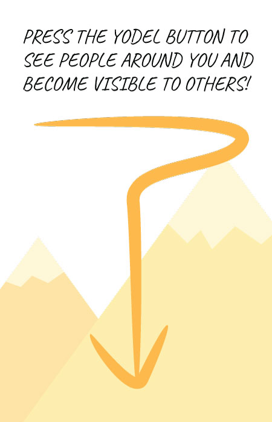

<ion-view view-title="Home">
  <div class="bar bar-header bar-yellow">
    <h1 class="title">Yodelers</h1>
  </div>
  <ion-content class="has-header">
    

    <div class="searchAndDistance">
      <form class="" role="search">
        <div class="searchDiv">
          <input class="searchField" ng-model="search" type="text" placeholder="Search">
        </div>
        <div class="dragDiv">
          <div>Distance: {{rangeValue / 10 }} miles</div>
          <input class="dragBar" type="range" name="volume" min="0" max="50" ng-model="rangeValue" ng-change="drag(rangeValue)">
        </div>
      </form>
    </div>
    <ion-item class="list-item" ng-repeat='user in usersInRange | filter: search' ng-show="lessThan(user.distance)" ui-sref="tabs.chat({userId: user.id})">
      <div class="item-avatar" href="#">
        
        <h2>{{user.username}}</h2>
        <ng-pluralize count="user.distance" when="{'0': 'No comments yet',
        '1': 'View 1 comment',
        'other': 'Distance from you: {{user.distance | number: 1}} miles.'}">
      </ng-pluralize>
      <h5>Interests: {{user.interests}}</h5>
    </div>
  </ion-item>
</ion-content>
</ion-view>
